product
 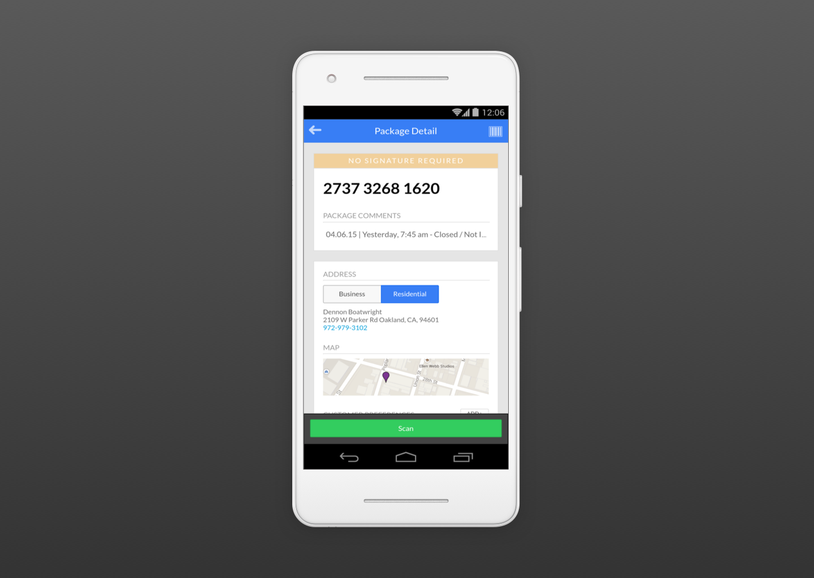
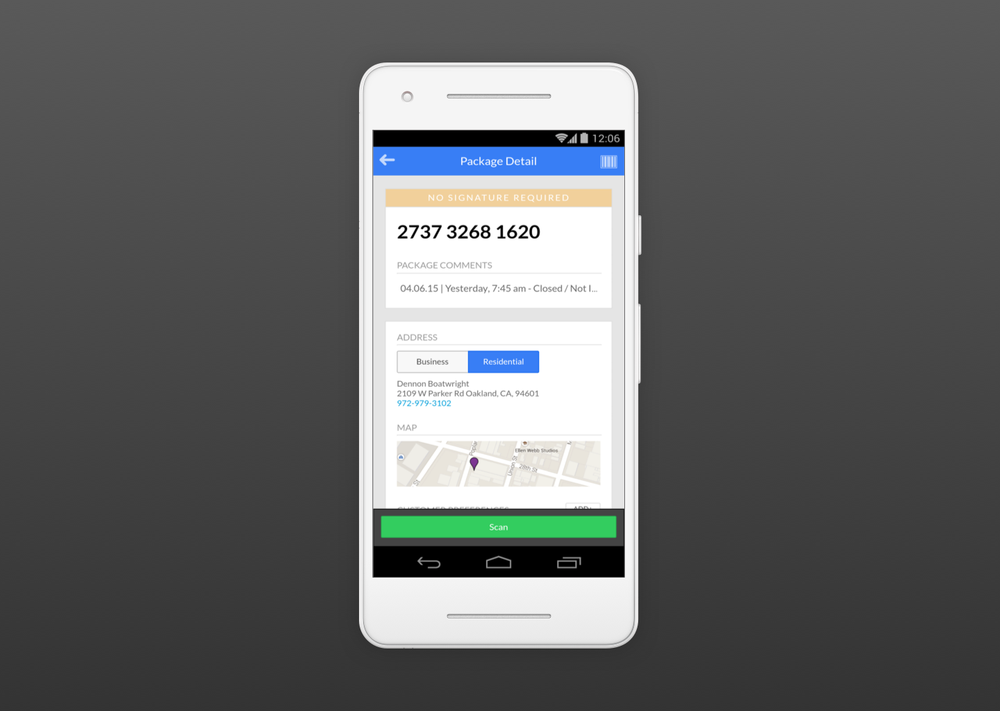
 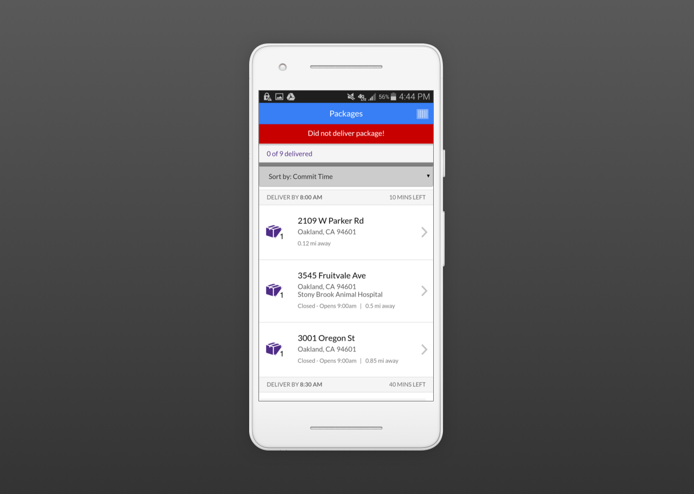
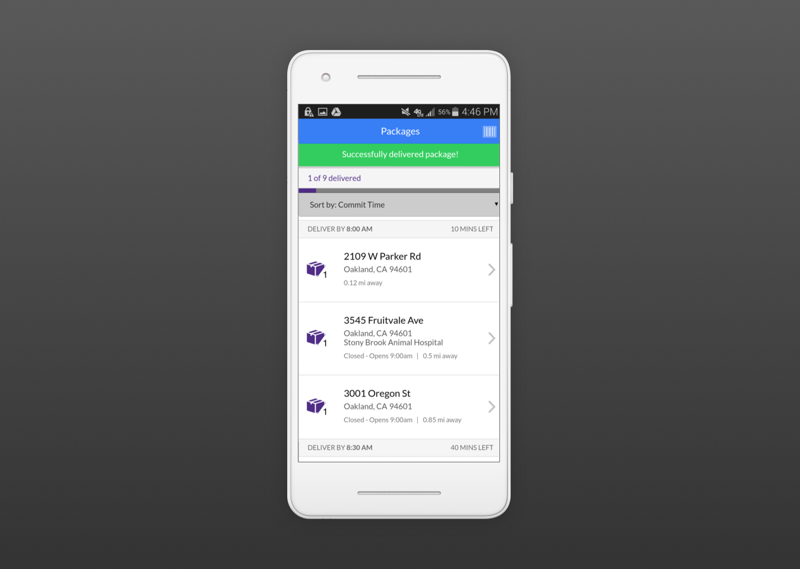
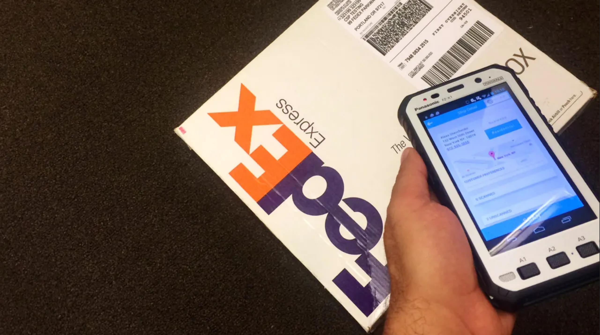
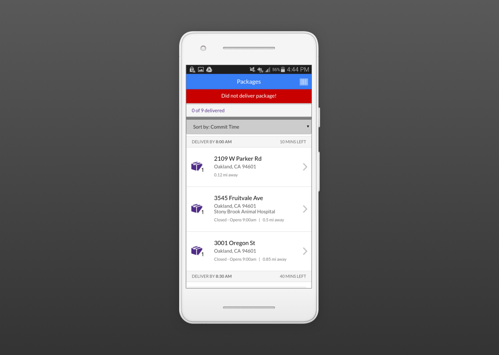
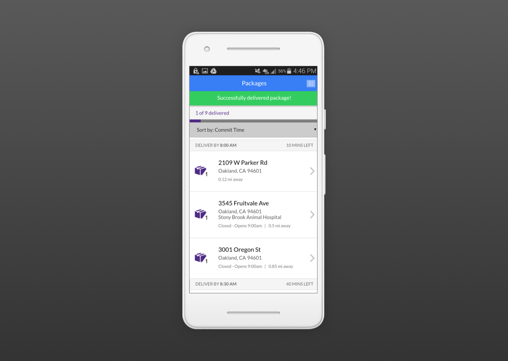
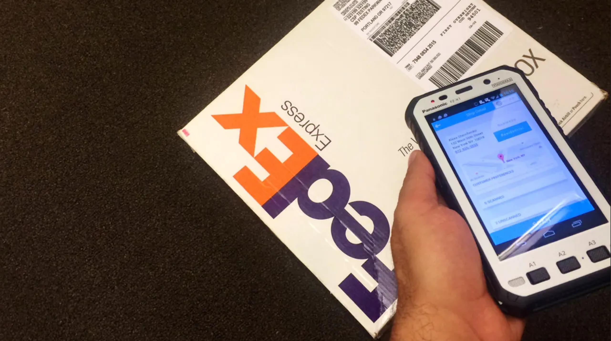
overview
The original Powerpad was a game changer for Fedex, allowing their couriers use to scan, track, and deliver pacakges. However, it was developed and designed around constraints and biases that are no longer valid. Built in a monolithic fashion using Windows Forms, the system followed rigid linear paths, constricting employees and forcing them to follow workflows that blocked them from performing specific tasks.
As the UX Designer on the project, I worked on the Smartpad, the improved version of the Powerpad. Rather than scrap the entire system, we started small and proposed rolling out the solution in phases. Focusing our efforts First-Overnight Couriers was key to our process. FO couriers are the low-volume, delivery-only couriers, that ensure your packages arrive before 8am. Afterwards, we would go back to the same couriers in order to validate our proposed solutions, interacting with them as they used the system in different delivery scenarios. It was integral that we validated our solutions so that Fedex would not spend insane amounts of money and waste time launching a product that would not work.
The Smartpard is a simpler, and more logical system than it's Powerpad counterpart. Reducing the total number of business and general logic errors that existed in its predecessor, while recommending a more modern, less clunky, physical device that would house the system.
product
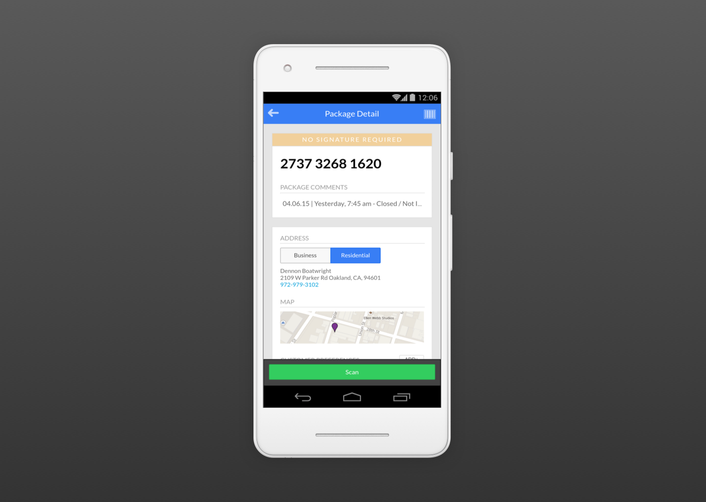
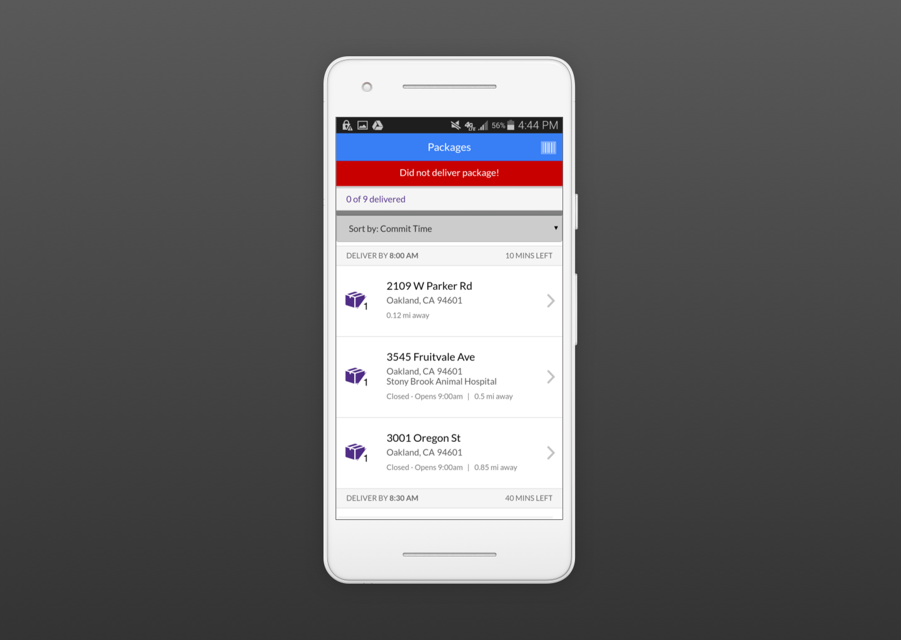
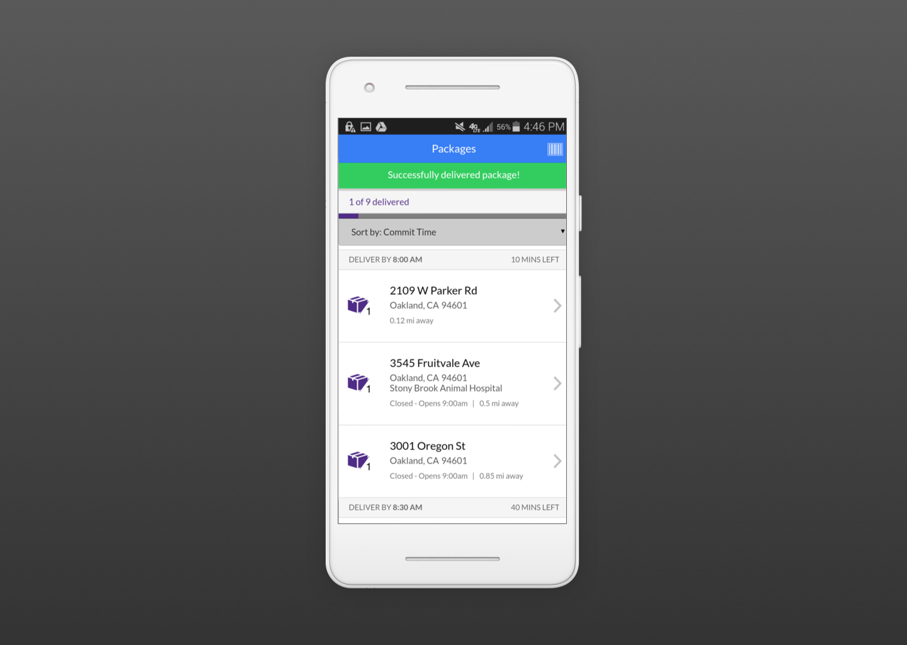
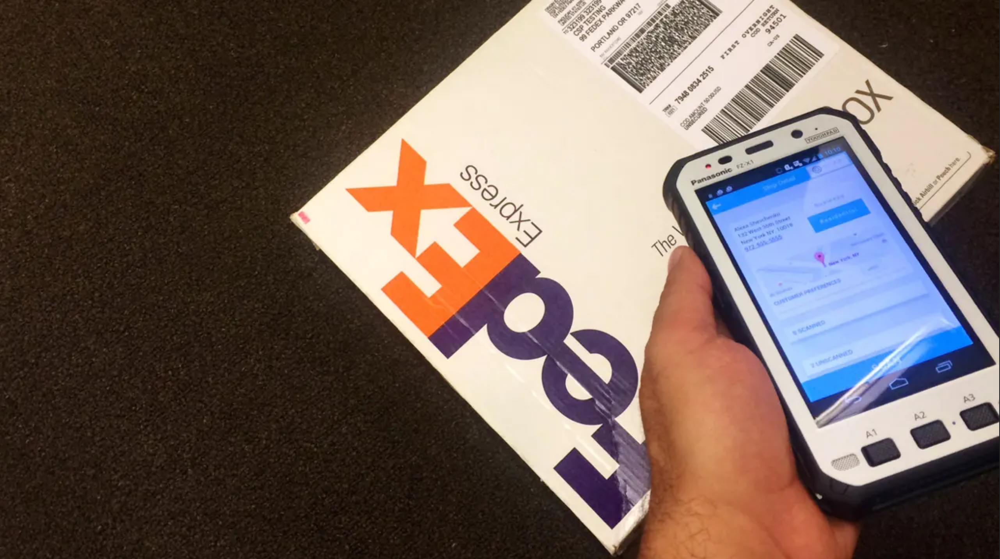
projects